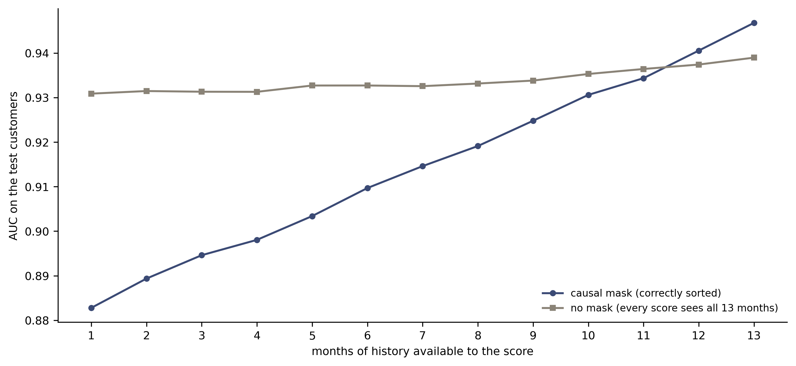
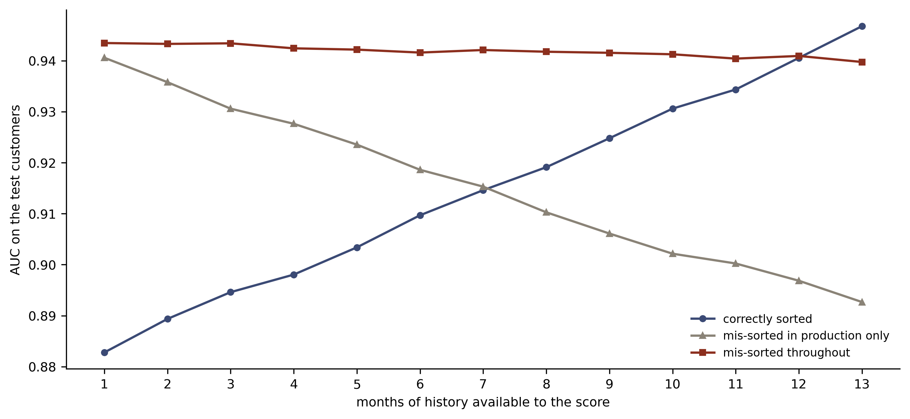
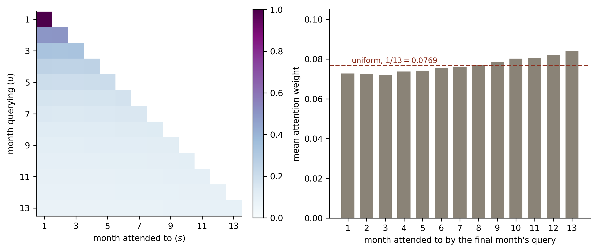
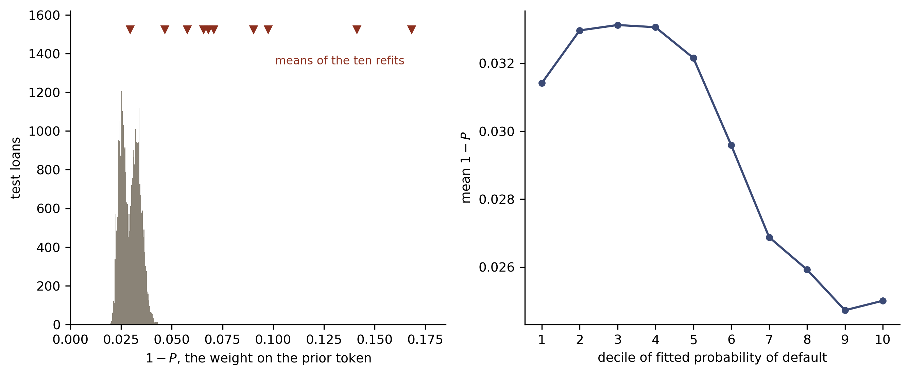

Credit Lectures 10 and 11: Attention, Transformers and the Credibility Transformer
Deep Learning for Actuarial Modelling: a credit risk companion
Author
Mario Ervedosa, adapting Scognamiglio, Maggi, Wüthrich and Richman
Published
September 3, 2026
Abstract
Attention layers, the Transformer and the Credibility Transformer of Richman, Scognamiglio and Wüthrich (2025), built twice over because credit has two problems where insurance has one. Over the Amex monthly statement panel the course’s time-causal mask stops being a technicality and becomes a leakage control. A causally masked layer produces the profile a behavioural scorecard should have, rising from 0.8828 of AUC on one statement to 0.9468 on thirteen, and it beats the unmasked layer at the horizon where both may see everything, 49.370 deviance against 52.385. Dropping the mask buys 0.0481 of AUC at month 1 and delivers a score that has read the future. A panel sorted the wrong way round and then fitted is worse still, reporting 0.9435 of AUC from a single statement where the honest figure is 0.8828 and understating the deviance by 19.7 points, and it validates cleanly because the hold-out carries the same bug. The one surviving tell is the shape of the profile, which is flat where a genuine behavioural model rises. On the Bondora application book the architecture is tokenised covariate by covariate and read out through a CLS token. It competes without leading: 107.342 at seed 100 is the series’ best single fit, and yet the ten-seed mean of 107.381 sits between the LocalGLMnet’s 107.434 and lecture 6’s embedded network’s 107.313 with neither difference significant, while nagging reaches 107.097 against that network’s 106.921. The credibility mechanism divides. Its explicit half behaves exactly as described, the prior token learning the global mean to floating-point constancy, and yet the sweep over the gate probability spans 0.213 against a seed standard deviation of 0.126 and is won by switching the mechanism off. Its implicit half is exact algebra, since the CLS token’s attention row is literally a credibility-weighted average of covariate and prior values, with the weight on the covariates occupying the position of lecture 6’s Bühlmann weight. The weight nonetheless carries none of that quantity’s content. Reseeding moves its mean from 0.0295 to 0.1683, a between-fit dispersion 9.4 times the spread across borrowers within one fit, and it separates borrowers with no prior loan from those with three or more by 0.0012 in the wrong direction while correlating with the fitted probability at -0.67.
Introduction
Two earlier lectures in this series point here, and they point at different things. Lecture 6 built every covariate into a common \(b\)-dimensional token space and then said what that construction was for: “Hence the Credibility Transformer of Richman, Scognamiglio and Wüthrich (2025), which the tenth and eleventh lectures build, starts from the construction in this section.” Lecture 3 promised attention “in full” and named the dataset it wanted, namely “the Amex panel is the dataset in this series it was made for”.
This lecture discharges both, in that order reversed. It runs in two acts.
The first act is the one with no insurance counterpart. Course section 2.5 introduces time-causal masking and then never applies it, because the tabular tokenisation of section 3 is explicitly permutation invariant and so has no time to be causal about. Credit does have such data. A behavioural scorecard reads a customer’s monthly statements and scores them month by month, which makes masking a leakage control rather than a technicality. The act therefore runs attention over the Amex customer-month panel and measures what the mask is worth.
The second act is the course’s own centrepiece, the Credibility Transformer on tabular data, and it carries the series’ deviance comparison on the Bondora book. Its interest for credit is narrower than the architecture’s reputation suggests. The credibility mechanism the architecture is named for turns out to have two halves, one deliberate and one incidental, and the incidental half assigns every borrower an individual credibility weight. Whether that weight means anything on a credit book is the question this lecture answers, and the answer is partly negative.
Three boundaries are deliberate. Lecture C2 reserves the question of whether an attribution may be read causally, so this lecture says what an attention weight is and cites C2 forward wherever the temptation to read it as an effect arises. Lecture 9 owns reason codes and the noise-calibrated importance test, so the CLS token’s attention over covariates is set beside that work rather than made into a second test. Lecture D1 owns the response variable, which matters in the first act for a reason section 2.1 gives.
Two conventions carry over unchanged for the Bondora act. There is no exposure offset, since default_12m is a zero-one flag over a fixed twelve-month window, so every case weight is one. Deviance is quoted on the series’ scale, meaning \(100 \times 2 \times\) the mean Bernoulli deviance contribution, so the numbers in sections 3 and 4 sit beside those of lectures 2, 4, 5, 6, 7, 8 and 9 without rescaling. The first act uses a different response on a different book, so its losses are quoted on the same scale and are not comparable with the second act’s.
Imports and shared settings
import numpy as npimport pandas as pdimport polars as plimport torchimport matplotlib.pyplot as pltfrom matplotlib.patches import Rectanglefrom sklearn.metrics import roc_auc_scoreBLUE, RED, GREY ="#3B4A75", "#8C2F1E", "#8A8377"plt.rcParams.update({"figure.dpi": 150, "font.size": 9,"axes.spines.top": False, "axes.spines.right": False})torch.set_num_threads(4)def dev(pred, obs):"""Bernoulli deviance on the series scale: 100 x 2 x the mean contribution.""" p = np.clip(np.asarray(pred, float), 1e-12, 1-1e-12) y = np.asarray(obs, float)return100*2* np.mean(-y * np.log(p) - (1- y) * np.log(1- p))
1 Building blocks
The Transformer is an assembly rather than a single idea, so this section builds its three parts separately before section 2 puts them together. Two of the three leave the data’s shape untouched and introduce no interaction between time slices at all, which is worth holding onto: everything that makes a Transformer interesting happens in the attention layer, and the rest is pre-processing with parameters.
Throughout, sequential data is a two-dimensional tensor \[
\boldsymbol{X}_{1:t} = \big[\boldsymbol{X}_1, \ldots, \boldsymbol{X}_t\big]^\top
\in \mathbb{R}^{t \times b},
\] with \(t\) time slices \(\boldsymbol{X}_u \in \mathbb{R}^b\) and \(b\) channels. The course writes the channel count as \(q\) here and as \(b\) in its tabular sections, where \(q\) becomes the covariate count instead. This lecture uses \(b\) for channels in both halves and reserves \(q\) for the covariate count, so the two acts share one notation.
1.1 Layer normalisation
Layer normalisation, from Ba, Kiros and Hinton (2016), standardises each time slice across its own channels, \[
\boldsymbol{z}^{\text{norm}}(\boldsymbol{X}_{1:t}) =
\left( \gamma_j \frac{X_{u,j} - \bar{X}_u}{\sqrt{s_u^2 + \epsilon}} + \delta_j
\right)_{1 \le u \le t,\, 1 \le j \le b},
\] where \(\bar{X}_u\) and \(s^2_u\) are the mean and variance taken over the \(b\) channels of slice \(u\), and \(\boldsymbol{\gamma}, \boldsymbol{\delta} \in
\mathbb{R}^b\) are trainable. It therefore adds \(2b\) parameters and depends on the batch not at all, which is the property that separates it from the batch normalisation of Ioffe and Szegedy (2015).
The distinction has a credit-specific consequence. Batch normalisation carries a moving average across mini-batches, so the transformation a given customer receives depends on which other customers happened to share its batch. A scoring engine that has to reproduce a decision months later, for a complaint or for a supervisor, would have to reproduce that state as well. Layer normalisation has no such dependence: one customer’s tensor determines its own normalisation entirely.
torch.nn.LayerNorm(b) is exactly \(\boldsymbol{z}^{\text{norm}}\) when the channel dimension is last, so it is the one component below taken off the shelf.
b_demo, t_demo =8, 13norm = torch.nn.LayerNorm(b_demo)td = torch.nn.Linear(b_demo, 12)x = torch.randn(4, t_demo, b_demo)print(f"layer norm parameters {sum(p.numel() for p in norm.parameters())}"f" = 2b = {2* b_demo}")print(f"time-distributed FNN {sum(p.numel() for p in td.parameters())}"f" = (b + 1) x 12 = {(b_demo +1) *12}")print(f"shapes: input {tuple(x.shape)} -> norm {tuple(norm(x).shape)}"f" -> t-FNN {tuple(td(norm(x)).shape)}")row = norm(x)[0, 0].detach()print(f"first normalised slice: mean {row.mean():+.2e}, sd {row.std(unbiased=False):.4f}")
A time-distributed layer applies one identical operation to every time slice, \[
\boldsymbol{z}^{\text{t-FNN}}(\boldsymbol{X}_{1:t}) =
\big(\boldsymbol{z}^{\text{FNN}}(\boldsymbol{X}_1), \ldots,
\boldsymbol{z}^{\text{FNN}}(\boldsymbol{X}_t)\big)^\top
\in \mathbb{R}^{t \times b_1},
\] sharing one set of weights across all \(t\) slices. Consequently the parameter count is free of \(t\), as the demonstration above shows: a layer mapping 8 channels to 12 costs \((8+1) \times 12 = 108\) parameters whether the panel is 13 months long or 60. In torch a Linear layer applied to a tensor whose last dimension is the channel dimension is already time-distributed, so no wrapper is needed.
The property that matters is negative. Slices \(\boldsymbol{X}_u\) and \(\boldsymbol{X}_s\) never meet inside a time-distributed layer, so up to this point a thirteen-month history is thirteen separate one-month problems.
1.3 The attention layer
Attention is where the slices meet. Each slice is equipped with three vectors, and the course’s names for them survive translation into credit without much strain.
The query\(\boldsymbol{q}_u \in \mathbb{R}^b\) is what slice \(u\) is looking for. The key\(\boldsymbol{k}_u\) is what slice \(u\) advertises about itself. The value\(\boldsymbol{v}_u\) is the content slice \(u\) passes on when something matches it. On a monthly statement panel the reading is direct: a month showing a minimum payment and a rising balance carries a key saying “distress beginning here”, and a later month querying for exactly that gets a large weight on it.
Stacking gives \(Q, K, V \in \mathbb{R}^{t \times b}\), and the attention head is scaled dot-product attention, \[
H = A V = \operatorname{softmax}\!\left(\frac{Q K^\top}{\sqrt{b}}\right) V
\in \mathbb{R}^{t \times b},
\qquad
a_{u,s} = \frac{\exp(a^\circ_{u,s})}{\sum_{k=1}^{t} \exp(a^\circ_{u,k})},
\] with \(A^\circ = QK^\top/\sqrt{b}\) and the softmax taken row-wise, so every row of \(A\) sums to one. Row \(u\) of \(H\) is therefore a weighted average of the rows of \(V\), with weights measuring how far each key points in the same direction as query \(u\). The \(\sqrt{b}\) scaling removes the dimension dependence, which keeps the softmax from flattening as \(b\) grows.
Self-attention is the case where \(Q\), \(K\) and \(V\) are all built from \(\boldsymbol{X}_{1:t}\) itself by three time-distributed FNNs. That is the only case this lecture uses.
def attention(Q, K, V, causal=False):"""Scaled dot-product attention, optionally masked to respect time order.""" A0 = Q @ K.transpose(-2, -1) / Q.shape[-1] **0.5if causal: t = Q.shape[-2] future = torch.triu(torch.ones(t, t, dtype=torch.bool), diagonal=1) A0 = A0.masked_fill(future, float("-inf")) A = torch.softmax(A0, dim=-1)return A @ V, Atorch.manual_seed(100)Qd, Kd, Vd = (torch.randn(1, 5, 4) for _ inrange(3))_, Aopen = attention(Qd, Kd, Vd)_, Amask = attention(Qd, Kd, Vd, causal=True)print("unmasked attention matrix, rows sum to one:")print(np.round(Aopen[0].detach().numpy(), 3))print(f"row sums {np.round(Aopen[0].sum(1).detach().numpy(), 6)}")print("\ncausally masked, same inputs:")print(np.round(Amask[0].detach().numpy(), 3))
Read the second matrix as the definition of the mask. Setting \(a^\circ_{u,s} = -\infty\) for \(s > u\) sends \(a_{u,s}\) to zero, so slice \(u\) sees slices \(1, \ldots, u\) and nothing later. Row 1 attends only to itself and is therefore degenerate at one, and each subsequent row spreads over a longer history. Since the attention layer is the only place slices interact, masking it is sufficient for the whole layer to respect time order.
1.3.1 Multiple heads, and why this lecture uses one
An attention head carries one set of query, key and value parameters, so it behaves like a single neuron. Multi-head attention runs \(n_h \ge 2\) of them in parallel and recombines them, \[
H_{\text{MH}}(\boldsymbol{X}_{1:t}) =
\operatorname{Concat}(H_1, \ldots, H_{n_h})\, W \in \mathbb{R}^{t \times b},
\] with \(W \in \mathbb{R}^{n_h b \times b}\) restoring the input shape so layers compose.
This lecture nonetheless stays single-headed throughout, for a reason that only becomes visible in section 4.3. The implicit credibility mechanism that the Credibility Transformer is interesting for is read off one specific entry of one attention matrix. With \(n_h\) heads there are \(n_h\) such entries and no single credibility weight to report, so the architecture that makes the lecture’s central measurement possible is the one-head architecture. Section 4.3 says what is lost.
2 Attention over a behavioural panel
The course’s sequential theory arrives in credit already having a job. A behavioural scorecard scores an existing customer from the account’s own history, monthly, and the question of what the score at month \(u\) may legitimately see is a leakage question with a supervisory edge to it. Consequently this act does what the course’s tabular sections cannot: it puts the mask of section 1.3 to work and prices it.
2.1 The Amex customer-month panel
Loading the panel
CH = ["P_2", "B_1", "B_2", "B_3", "D_39", "D_41", "R_1", "S_3"]T, NCUST =13, 60_000panel = (pl.scan_parquet("../data/amex_panel.parquet") .select(["customer_ID", "S_2", "target"] + CH).collect())sizes = panel.group_by("customer_ID").len()print(f"{panel.height:,} statements over {sizes.height:,} customers, "f"dated {panel['S_2'].min()} to {panel['S_2'].max()}")print(f"history lengths run 1 to {sizes['len'].max()}; "f"{sizes.filter(pl.col('len') == T).height:,} customers "f"({100* sizes.filter(pl.col('len') == T).height / sizes.height:.1f} "f"per cent) carry the full {T}")
5,531,451 statements over 458,913 customers, dated 2017-03-01 to 2018-03-31
history lengths run 1 to 13; 386,034 customers (84.1 per cent) carry the full 13
The panel is the Kaggle American Express default prediction data, described in notes/credit-datasets.md, and it is a genuine customer-month panel rather than a cross-section. Its 190 covariates are anonymised into prefixed families, so the eight channels used below are chosen for family coverage rather than for meaning: P_2 is a payment variable and the strongest single predictor in the public competition, B_* are balance variables, D_* delinquency, R_1 risk and S_3 spend.
Two properties of the response matter, and both are lecture D1’s territory rather than this lecture’s. The target flags default within 18 months of the customer’s latest statement, so it is fixed at customer level. Therefore what varies as the panel advances is the information set alone, whereas the outcome window stays where it is. That is precisely what makes a month-by-month discrimination curve readable below: a rising curve is information accumulating, since nothing else is moving.
The subsample keeps customers carrying all 13 statements, which drops the ragged histories and with them the padding mask. Padding and causality are separate mechanisms that happen to share an implementation, and mixing them in one exhibit would confound the measurement this act exists for.
Subsample, standardise and add a positional channel
# group_by output order is not deterministic in polars, so the frame is sorted# before sampling. Without the sort, a fixed seed still draws a different# customer subsample on every run, and every figure below moves quietly.full = (sizes.filter(pl.col("len") == T).select("customer_ID") .sort("customer_ID").sample(n=NCUST, seed=11))d = panel.join(full, on="customer_ID", how="inner").sort(["customer_ID", "S_2"])y = d["target"].to_numpy()[np.arange(0, d.height, T)].astype(np.float32)Xs = d.select(CH).to_numpy().astype(np.float32).reshape(-1, T, len(CH))n_seq =len(y)perm_s = np.random.default_rng(1).permutation(n_seq)il, it = perm_s[:int(0.8* n_seq)], perm_s[int(0.8* n_seq):]mu_s = np.nanmean(Xs[il].reshape(-1, len(CH)), axis=0)sd_s = np.nanstd(Xs[il].reshape(-1, len(CH)), axis=0)Xs = np.nan_to_num((Xs - mu_s) / sd_s, nan=0.0).astype(np.float32)pos = (np.arange(1, T +1) / T).astype(np.float32)Xs = np.concatenate([Xs, np.broadcast_to(pos[None, :, None], (n_seq, T, 1))], axis=2)b_seq = Xs.shape[2]print(f"tensor {Xs.shape}: {n_seq:,} customers x {T} months x {b_seq} channels")print(f"learn {len(il):,} / test {len(it):,}, default rate {y.mean():.5f}")
tensor (60000, 13, 9): 60,000 customers x 13 months x 9 channels
learn 48,000 / test 12,000, default rate 0.23298
Standardisation follows lecture 6, computed on the learning customers and applied to both samples, with missing values imputed at the channel mean afterwards, which is zero on the standardised scale. The final channel is the normalised positional encoding \(u/t\) of course section 2.4. Section 2.4 below shows that this channel is doing more work than it appears to.
2.2 A Transformer layer with a monthly readout
The architecture is course section 2.1 verbatim, closed with a readout applied to every time slice. One forward pass therefore returns thirteen scores per customer, one per month, and the mask decides what each of them was allowed to see. Lecture S3 used the same device to get a whole term structure from one pass instead of expanding the book into person-periods.
class SeqTransformer(torch.nn.Module):"""One Transformer layer over a monthly panel, with a per-month readout."""def__init__(self, b, causal=True, seed=100):super().__init__() torch.manual_seed(seed)self.b, self.causal = b, causalself.norm_in = torch.nn.LayerNorm(b)self.WQ, self.WK, self.WV = (torch.nn.Linear(b, b) for _ inrange(3))self.norm_ff = torch.nn.LayerNorm(b)self.ff = torch.nn.Linear(b, b)self.norm_out = torch.nn.LayerNorm(b)self.dec = torch.nn.Linear(b, 1)def encode(self, X): Xn =self.norm_in(X) Q, K, V = (torch.tanh(self.WQ(Xn)), torch.tanh(self.WK(Xn)), torch.tanh(self.WV(Xn))) H, A = attention(Q, K, V, causal=self.causal) skip = X + H # z^skipreturn skip +self.ff(self.norm_ff(skip)), A # z^transdef forward(self, X): trans, _ =self.encode(X)return torch.sigmoid(self.dec(torch.tanh(self.norm_out(trans)))).squeeze(-1)print(f"parameters: {sum(p.numel() for p in SeqTransformer(b_seq).parameters())}"f" for b = {b_seq} channels, and free of t")
parameters: 424 for b = 9 channels, and free of t
Note what the skip connection does to the mask’s reach. Slice \(u\) of \(\boldsymbol{z}^{\text{skip}}\) is \(\boldsymbol{X}_u + H_u\), so the slice’s own contemporaneous values arrive whatever the mask says. The mask governs the attention term alone, which is the only term that crosses time.
Training routine
def train_seq(causal=True, seed=100, epochs=60, batch=2000, patience=8, X=None): X = Xs if X isNoneelse X p = np.random.default_rng(seed).permutation(len(il)) tr, va = il[p[:int(0.9*len(p))]], il[p[int(0.9*len(p)):]] Xtr, Xva = torch.tensor(X[tr]), torch.tensor(X[va]) ytr = torch.tensor(y[tr]).unsqueeze(1).expand(-1, T) yva = torch.tensor(y[va]).unsqueeze(1).expand(-1, T) model = SeqTransformer(X.shape[2], causal=causal, seed=seed) opt = torch.optim.NAdam(model.parameters()) bce = torch.nn.BCELoss() gen = torch.Generator().manual_seed(seed) best, best_epoch, best_state = np.inf, 0, Nonefor epoch inrange(1, epochs +1): model.train()for chunk in torch.randperm(len(Xtr), generator=gen).split(batch): opt.zero_grad() bce(model(Xtr[chunk]), ytr[chunk]).backward() opt.step() model.eval()with torch.no_grad(): v =200* bce(model(Xva), yva).item()if v < best: best, best_epoch = v, epoch best_state = {k: t.clone() for k, t in model.state_dict().items()}if epoch - best_epoch >= patience:break model.load_state_dict(best_state) model.eval()return model, best_epochdef scores(model, X):with torch.no_grad():return model(torch.tensor(X)).numpy()def auc_by_month(P):return np.array([roc_auc_score(y[it], P[:, u]) for u inrange(T)])
The routine is lecture 4’s, with the loss taken over all thirteen months at once and the early-stopping split, the weight initialisation and the mini-batch order all drawn from one seed.
The two models answer different questions, and the table shows it. The causal model’s discrimination rises monotonically with the length of history available to it, from 0.8828 on a single statement to 0.9468 on thirteen, a gain of 0.0640 of AUC. That curve is the shape a behavioural scorecard should have, since the response is fixed at customer level and therefore the only thing improving is the information.
The unmasked model’s curve is nearly flat, running from 0.9309 to 0.9390. Every one of its thirteen scores has seen all thirteen statements, so the month index has stopped meaning anything. At month 1 it beats the causal model by 0.0481 of AUC, and that gap is the price of the leak: a production score claiming to read one statement, delivering the discrimination of thirteen.
Furthermore the leak buys nothing where the information is legitimate. At month 13, where both models may see the whole history, the causal model is ahead by 0.0078 of AUC and by 3.015 deviance points, 49.370 against 52.385. Spreading each month’s score over the full panel costs the model the ability to say when anything happened, so it fits the final month worse than a model constrained to the past. The mask is therefore free, in the sense that respecting time order costs nothing at the one horizon where both architectures are entitled to the same data.
Code
mo = np.arange(1, T +1)fig, ax = plt.subplots(figsize=(9, 4.2))ax.plot(mo, auc_causal, "o-", color=BLUE, ms=4, lw=1.6, label="causal mask (correctly sorted)")ax.plot(mo, auc_open, "s-", color=GREY, ms=4, lw=1.6, label="no mask (every score sees all 13 months)")ax.set_xlabel("months of history available to the score")ax.set_ylabel("AUC on the test customers")ax.set_xticks(mo)ax.legend(frameon=False, loc="lower right", fontsize=8)fig.tight_layout()

Discrimination by months of history available, on the 12,000 held-out customers. The causal model’s curve rises because the response is fixed at customer level, so the only thing changing across the horizontal axis is how much of the account’s history the score may read. The unmasked model’s curve is flat because every one of its scores has already read all thirteen statements. The two mis-sorted curves are section 2.4’s.
2.4 Permutation invariance, and the mis-sorted panel
Attention has no notion of order. That is a mathematical property rather than a shortcoming, and it has a sharp consequence for a panel: an unmasked Transformer layer is permutation equivariant, so permuting the time slices of the input permutes the output slices identically and changes no number. The following check makes that exact by reversing every channel, the positional encoding included, which is a genuine permutation of the thirteen rows.
X_perm = np.ascontiguousarray(Xs[it][:, ::-1, :])P_open_perm = scores(m_open, X_perm)P_causal_perm = scores(m_causal, X_perm)print("reversing all thirteen rows, then comparing against the reversed ""predictions of the correctly ordered panel:")print(f" unmasked model, largest discrepancy "f"{np.abs(P_open_perm - P_open[:, ::-1]).max():.2e}")print(f" causal model, largest discrepancy "f"{np.abs(P_causal_perm - P_causal[:, ::-1]).max():.3f}")
reversing all thirteen rows, then comparing against the reversed predictions of the correctly ordered panel:
unmasked model, largest discrepancy 2.38e-07
causal model, largest discrepancy 0.591
The unmasked model agrees to floating-point noise, which is equivariance holding exactly. The causal model disagrees by 0.591 on a probability scale, since the mask is the only component in the layer that can tell one row’s position from another’s.
Hence the positional channel earns a second look. Removing it leaves a model that cannot distinguish orderings at all, and the check below confirms that its predictions permute exactly with its inputs even without a mask.
unmasked, no positional channel: largest discrepancy 2.38e-07
AUC month 1 0.9185, month 13 0.9411
Its month-by-month curve still rises, from 0.9185 to 0.9411, which is worth pausing on. The rise cannot be information about ordering, because the model has none. It comes from the skip connection instead: slice \(u\)’s own contemporaneous values reach its readout directly, and a customer’s thirteenth statement is simply more informative about a default measured from that statement than the first one is.
2.4.1 What a mis-sorted panel does
Now the practical case. Statement panels arrive keyed by something other than calendar order, and the repository’s own notes record the trap for the Home Credit table, where MONTHS_BALANCE counts backwards from the application, so ordering it ascending gives chronological order and reversing it silently reverses every sequence while leaving every marginal distribution intact. No univariate check catches that. The exhibit below reproduces it on this panel, in the form the bug actually takes: the statements are sorted the wrong way round, while the positional channel is still computed from row order and therefore still reads 1 to 13.
There are two versions, and they fail differently.
Building the mis-sorted panel and refitting on it
X_bad = Xs[:, ::-1, :].copy()X_bad[:, :, -1] = Xs[:, :, -1] # the positional channel is still 1..13X_bad = np.ascontiguousarray(X_bad)# version one: sorted correctly in training, wrongly in productionauc_score_bad = auc_by_month(scores(m_causal, X_bad[it]))# version two: sorted wrongly everywhere, so the bug is in the backtest toom_bad, s_bad = train_seq(causal=True, X=X_bad)P_bad = scores(m_bad, X_bad[it])auc_bad = auc_by_month(P_bad)print(pd.DataFrame({"correct": auc_causal.round(4),"mis-sorted in production only": auc_score_bad.round(4),"mis-sorted throughout": auc_bad.round(4)}, index=pd.Index(mo, name="month")).to_string())print(f"\nmonth-1 deviance: correct {dev(P_causal[:, 0], y[it]):.3f} "f"mis-sorted throughout {dev(P_bad[:, 0], y[it]):.3f}")print(f"month-13 deviance: correct {dev(P_causal[:, -1], y[it]):.3f} "f"mis-sorted throughout {dev(P_bad[:, -1], y[it]):.3f}")
Scoring a correctly trained model on a reversed panel inverts the curve. Discrimination now falls with the length of history, from 0.9406 at month 1 to 0.8927 at month 13, because row 1 of a reversed panel holds the final statement and a causal mask at row 1 sees that row alone. The model is therefore being handed the most informative statement first and the least informative last, exactly backwards.
Retraining on the mis-sorted panel is the more dangerous version, because it is self-consistent. The month-1 score reaches an AUC of 0.9435 and a deviance of 50.595, against the honest month-1 figures of 0.8828 and 70.324. A behavioural scorecard would therefore be signed off claiming 0.9435 of discrimination from a single statement, overstating it by 0.0607 of AUC and understating the deviance by 19.7 points, and no hold-out sample would object, since the hold-out carries the identical bug. Lecture R3 made the general version of this point about sample design; this is the same failure arriving through the time axis.
One tell survives, and it is the shape rather than the level. The mis-sorted curve is flat and slightly declining, 0.9435 down to 0.9398, whereas a behavioural scorecard reading a genuine history has to improve as that history lengthens. Consequently the diagnostic worth running on any sequential credit model is the discrimination profile against months of history, and a profile that fails to rise is evidence that the sequence is not what it claims to be.
Code
fig, ax = plt.subplots(figsize=(9, 4.2))ax.plot(mo, auc_causal, "o-", color=BLUE, ms=4, lw=1.6, label="correctly sorted")ax.plot(mo, auc_score_bad, "^-", color=GREY, ms=4, lw=1.6, label="mis-sorted in production only")ax.plot(mo, auc_bad, "s-", color=RED, ms=4, lw=1.6, label="mis-sorted throughout")ax.set_xlabel("months of history available to the score")ax.set_ylabel("AUC on the test customers")ax.set_xticks(mo)ax.legend(frameon=False, loc="lower right", fontsize=8)fig.tight_layout()

The same discrimination profile for the two mis-sorted variants, against the correctly sorted causal model. Scoring a correct model on a reversed panel inverts the profile. Refitting on the reversed panel flattens it and lifts the early months above what the correct model can honestly achieve, which is the version that passes a hold-out test.
2.5 What the attention weights say about recency
The attention matrix of the correctly sorted causal model is readable directly. Row \(u\) holds the weights month \(u\)’s query places on months \(1, \ldots, u\), and those weights are positive and sum to one, so they are a distribution over the account’s past.
Code
with torch.no_grad(): _, A_seq = m_causal.encode(torch.tensor(Xs[it][:4000]))A_mean = A_seq.numpy().mean(axis=0)row13 = A_mean[-1]fig, (a1, a2) = plt.subplots(1, 2, figsize=(9, 3.8), gridspec_kw={"width_ratios": [1, 1.15]})masked = np.where(np.triu(np.ones((T, T), bool), 1), np.nan, A_mean)im = a1.imshow(masked, cmap="BuPu", vmin=0)a1.set_xlabel("month attended to ($s$)")a1.set_ylabel("month querying ($u$)")a1.set_xticks(range(0, T, 2), labels=range(1, T +1, 2))a1.set_yticks(range(0, T, 2), labels=range(1, T +1, 2))fig.colorbar(im, ax=a1, fraction=0.046)a2.bar(mo, row13, color=GREY, width=0.7)a2.axhline(1/ T, color=RED, lw=1.2, ls="--")a2.text(1.2, 1/ T +0.0012, f"uniform, $1/13 = {1/T:.4f}$", color=RED, fontsize=8)a2.set_xlabel("month attended to by the final month's query")a2.set_ylabel("mean attention weight")a2.set_xticks(mo)a2.set_ylim(0, max(row13) *1.25)for s in ("top", "right"): a2.spines[s].set_visible(False)fig.tight_layout()print(f"final row: min {row13.min():.4f} at month {row13.argmin()+1}, "f"max {row13.max():.4f} at month {row13.argmax()+1}, "f"uniform would be {1/T:.4f}")
final row: min 0.0720 at month 3, max 0.0840 at month 13, uniform would be 0.0769

Left: the mean causal attention matrix over 4,000 test customers, row-normalised by construction, with the masked upper triangle blank. Right: the final month’s row of that matrix, against the uniform weight \(1/13 = 0.0769\) that a model treating every past month alike would produce.
The tilt towards recency is real and it is small. The final month’s query places 0.0840 on the most recent statement and 0.0728 on the oldest, so the heaviest weight is 1.15 times the lightest, against a uniform 0.0769. A learned attention distribution this close to flat says that most of what this architecture extracts from the panel is available from an unweighted average of the history, which is a deflationary reading and the honest one. Note also what it does not license. These weights describe where the fitted function looks, and reading them as the causal influence of a month on the outcome is the step lecture C2 reserves.
3 Transformers for tabular data
The second act returns to the Bondora book and to the series’ deviance comparison. Credit’s core application form is a cross-section, so it carries no sequence for attention to run along, and the tabular Transformer manufactures one. Following course section 3, every covariate becomes a token in a common \(b\)-dimensional space, the covariate list becomes the sequence, and attention learns which characteristics should modify the reading of which others.
Lecture 6 built exactly that token space and said so: its closing section notes that embedding every covariate into a common space is what an attention layer requires, and names these lectures as where the construction is used. This section therefore starts from lecture 6’s embeddings rather than re-arguing for them.
The Bondora modelling frame, unchanged from lectures 4 to 9
The frame, the filters and the seed-1 80/20 split are those of lectures 4 to 9, so the deviances below chain to theirs without rescaling.
3.1 Feature tokenisation
Categorical and continuous covariates reach the common space by different routes. A categorical covariate \(X_j\) taking levels in \(\mathcal{A}_j = \{a_1, \ldots, a_{K_j}\}\) gets an entity embedding \[
\boldsymbol{e}^{\text{EE}}_j : \mathcal{A}_j \to \mathbb{R}^b,
\] which is lecture 6’s construction unchanged, costing \(b \sum_{j} K_j\) weights. A continuous covariate gets a small feed-forward network of its own, \[
\boldsymbol{z}^{\text{FNN}}_j : \mathbb{R} \to \mathbb{R}^b,
\qquad X_j \mapsto \boldsymbol{z}^{\text{FNN}}_j(X_j),
\] taken at depth 2 as the course suggests. The parallel the course draws is with a generalised additive model: each continuous covariate is given room to bend on its own before any interaction is asked of it, which relieves stochastic gradient descent of finding the right functional form and the right interactions simultaneously.
Credit modelling reaches the same objective from the opposite direction. Lecture F1 ran the classical tradition, which discretises a characteristic into bands and encodes the bands by weight of evidence, and that is also a per-covariate transformation fitted before anything else happens. Gorishniy, Rubachev and Babenko (2022) propose piecewise linear encoding for continuous covariates, which the course rightly describes as a continuous version of categorical binning, so the two traditions converge here. This lecture uses the depth-2 network and names piecewise linear encoding without implementing it, since F1 already owns the binning question.
Collecting the tokens gives \[
\boldsymbol{X}^\circ_{1:q} = \left[
\boldsymbol{e}^{\text{EE}}_1, \ldots, \boldsymbol{e}^{\text{EE}}_{q_c},
\boldsymbol{z}_{q_c+1}, \ldots, \boldsymbol{z}_q \right]^\top
\in \mathbb{R}^{q \times b},
\] which has the shape a Transformer layer wants, with \(q\) playing the role of the time dimension and \(b\) the channels. No time-causality applies, since the covariate list has no order, and section 2.4 established that an unmasked layer is permutation equivariant and therefore indifferent to how the list is arranged.
3.2 The CLS token
The tokens carry the covariates and nothing yet carries the borrower. A special token supplies that, borrowed from the BERT of Devlin et al. (2019), where a classify token accumulates a representation of the whole input through the attention mechanism. Appending \(\boldsymbol{c} \in \mathbb{R}^b\) gives the augmented input tensor \[
\boldsymbol{X}_{1:q+1} =
\begin{bmatrix} \boldsymbol{X}^\circ_{1:q} \\ \boldsymbol{c}^\top \end{bmatrix}
\in \mathbb{R}^{(q+1) \times b}.
\]
The CLS token is randomly initialised and carries no information about the borrower before the attention layer runs. After the layer, its row \[
\boldsymbol{c}^{\text{trans}}(\boldsymbol{X}) =
\boldsymbol{z}^{\text{trans}}_{q+1}(\boldsymbol{X}_{1:q+1}) \in \mathbb{R}^b
\] has attended to all \(q\) covariate tokens, and that row alone is forwarded to the readout. Everything the model predicts from therefore passes through one \(b\)-dimensional vector, which is what makes section 4.3’s reading of the attention weights possible.
The augmented input tensor for one Bondora borrower, at \(b = 8\) channels. Five rows are entity embeddings of categorical characteristics, three are depth-2 network embeddings of continuous ones, and the ninth is the CLS token, which is the same vector for every borrower until the attention layer runs. The Transformer layer maps this \(9 \times 8\) tensor to another of the same shape, and only the final row is read out.
3.3 The architecture
The Transformer layer is course section 2.1 applied to the augmented tensor: layer normalisation, self-attention through three time-distributed networks, a skip connection, then layer normalisation, a time-distributed network and a second skip connection, \[
\boldsymbol{z}^{\text{trans}}(\boldsymbol{X}_{1:q+1}) =
\boldsymbol{z}^{\text{skip}} +
\left(\boldsymbol{z}^{\text{t-FNN}} \circ \boldsymbol{z}^{\text{norm}}\right)
\!\left(\boldsymbol{z}^{\text{skip}}\right),
\qquad
\boldsymbol{z}^{\text{skip}} = \boldsymbol{X}_{1:q+1} + H.
\] The readout takes the transformed CLS token through a layer normalisation, a hyperbolic tangent and a single-unit network, and the logistic link closes the model, which is course section 3.6 with the log link swapped for a logit.
Two lines of the definition below belong to section 4 rather than here, namely the prior token and the Bernoulli gate. They are inert while \(\alpha = 1\), which is the setting this section uses, so the model fitted here is the tabular Transformer with the credibility mechanism switched off.
class FeatureTokeniser(torch.nn.Module):"""Every covariate to a b-dimensional token: an embedding, or a depth-2 FNN."""def__init__(self, cards_list, n_cont, b):super().__init__()self.emb = torch.nn.ModuleList( [torch.nn.Embedding(K, b) for K in cards_list])self.num = torch.nn.ModuleList( [torch.nn.Sequential(torch.nn.Linear(1, b), torch.nn.Tanh(), torch.nn.Linear(b, b)) for _ inrange(n_cont)])def forward(self, xc, xn): toks = [e(xc[:, j]) for j, e inenumerate(self.emb)] toks += [f(xn[:, j:j +1]) for j, f inenumerate(self.num)]return torch.stack(toks, dim=1) # (n, q, b)class CredibilityTransformer(torch.nn.Module):"""Single-head Credibility Transformer with a Bernoulli(alpha) token gate."""def__init__(self, cards_list, n_cont, b=8, alpha=0.95, seed=100):super().__init__() torch.manual_seed(seed)self.b, self.alpha = b, alphaself.tok = FeatureTokeniser(cards_list, n_cont, b)self.cls = torch.nn.Parameter(torch.randn(b) *0.1)self.norm_in = torch.nn.LayerNorm(b)self.WQ, self.WK, self.WV = (torch.nn.Linear(b, b) for _ inrange(3))self.norm_ff = torch.nn.LayerNorm(b)self.ff = torch.nn.Linear(b, b)self.norm_out = torch.nn.LayerNorm(b)self.dec = torch.nn.Linear(b, 1)def augmented(self, xc, xn): X0 =self.tok(xc, xn)return torch.cat([X0, self.cls.expand(X0.shape[0], 1, self.b)], dim=1)def heads(self, X): Xn =self.norm_in(X) Q, K, V = (torch.tanh(self.WQ(Xn)), torch.tanh(self.WK(Xn)), torch.tanh(self.WV(Xn))) H, A = attention(Q, K, V)return H, A, Vdef tokens(self, xc, xn):"""Both CLS tokens: the data-driven one and section 4.1's prior.""" X =self.augmented(xc, xn) H, A, V =self.heads(X) skip = X + H trans = skip +self.ff(self.norm_ff(skip)) c_trans = trans[:, -1, :] c_prior =self.ff(self.norm_ff(V[:, -1, :])) # section 4.1return c_trans, c_prior, Adef forward(self, xc, xn, gate=True, force=None): c_trans, c_prior, _ =self.tokens(xc, xn)if force =="prior": c = c_priorelif force =="trans"ornot gate: c = c_transelse: # section 4.2 Z = torch.bernoulli(torch.full((c_trans.shape[0], 1), self.alpha)) c = Z * c_trans + (1- Z) * c_priorreturn torch.sigmoid(self.dec(torch.tanh(self.norm_out(c))))
Training routine
def train_ct(seed=100, b=8, alpha=0.95, epochs=200, batch=5000, patience=20): p = np.random.default_rng(seed).permutation(len(idx_learn)) li, vi = idx_learn[p[:int(0.9*len(p))]], idx_learn[p[int(0.9*len(p)):]] Ctr, Ntr = torch.tensor(Xc[li]), torch.tensor(Xn[li]) Cva, Nva = torch.tensor(Xc[vi]), torch.tensor(Xn[vi]) ytr = torch.tensor(y_all.iloc[li].to_numpy(), dtype=torch.float32).unsqueeze(1) yva = torch.tensor(y_all.iloc[vi].to_numpy(), dtype=torch.float32).unsqueeze(1) model = CredibilityTransformer([cards[c] for c in CATS], len(CONT), b=b, alpha=alpha, seed=seed) opt = torch.optim.NAdam(model.parameters()) bce = torch.nn.BCELoss() gen = torch.Generator().manual_seed(seed) torch.manual_seed(seed +1) best, best_epoch, best_state = np.inf, 0, Nonefor epoch inrange(1, epochs +1): model.train()for chunk in torch.randperm(len(Ctr), generator=gen).split(batch): opt.zero_grad() bce(model(Ctr[chunk], Ntr[chunk]), ytr[chunk]).backward() opt.step() model.eval()with torch.no_grad(): v =200* bce(model(Cva, Nva, gate=False), yva).item()if v < best: best, best_epoch = v, epoch best_state = {k: t.clone() for k, t in model.state_dict().items()}if epoch - best_epoch >= patience:break model.load_state_dict(best_state) model.eval()return model, best_epochdef predict(model, idx, force="trans"):with torch.no_grad():return model(torch.tensor(Xc[idx]), torch.tensor(Xn[idx]), gate=False, force=force).numpy().ravel()n_par =sum(p.numel() for p in CredibilityTransformer([cards[c] for c in CATS], len(CONT)).parameters())print(f"parameters at b = 8: {n_par}")
parameters at b = 8: 897
3.4 Fitting the tabular Transformer
Setting \(\alpha = 1\) leaves the gate always selecting the data-driven token, so the model below is the tabular Transformer with the credibility mechanism switched off. It is the baseline section 4 has to beat.
Note that “switched off” is precise about the gate and loose about the architecture. The prior token and its parameters are still there, and section 4.2 shows that at \(\alpha = 1\) they are never trained, so the parameter count below is the Credibility Transformer’s rather than that of a plain tabular Transformer somebody would build from scratch.
Out of sample it reaches 107.327 on 897 parameters. Set against the series, that is ahead of lecture 4’s feed-forward network at 107.621, of lecture 8’s ICEnet at 107.583, and of lecture 9’s LocalGLMnet at 107.360, and it uses fewer parameters than lecture 6’s one-hot network at 1,266 while using more than its embedded one at 846. A single fit is a weak statistic, however, and lecture 6 measured a seed standard deviation of 0.072 to 0.124 on this book, so section 4.5 repeats the exercise over ten seeds before drawing any conclusion from the ordering.
4 The Credibility Transformer
The architecture so far is the tabular Transformer, and the Credibility Transformer of Richman, Scognamiglio and Wüthrich (2025) adds one thing to it: a second CLS token that has seen no covariates at all, together with a mechanism for balancing the two. The idea is Bühlmann’s, which lecture 6 introduced for a different purpose, and the architecture’s interest for credit is that the balance turns out to be struck twice, once by design and once as a by-product.
4.1 The prior token
The transformed CLS token \(\boldsymbol{c}^{\text{trans}}(\boldsymbol{X})\) is fully data driven, since the attention layer has mixed it with every covariate token. Its prior counterpart is built from the CLS token alone. Take the value projection of the CLS row before any attention happens, \[
\boldsymbol{v}_{q+1} = \boldsymbol{z}^{\text{FNN}}_V(\boldsymbol{c})
\in \mathbb{R}^b,
\] and run it through the same post-attention chain, with the same parameters the Transformer layer uses, \[
\boldsymbol{c}^{\text{prior}} =
\left(\boldsymbol{z}^{\text{FNN}} \circ \boldsymbol{z}^{\text{norm}}\right)
(\boldsymbol{v}_{q+1}) \in \mathbb{R}^{b}.
\]
Two properties follow, and both matter. Since \(\boldsymbol{c}\) is a single trainable parameter vector shared by every borrower, and since the covariates never enter, \(\boldsymbol{c}^{\text{prior}}\) is the same vector for every borrower in the book. Sharing the parameters with the Transformer layer means it costs nothing beyond the CLS token itself and lives in the same space as \(\boldsymbol{c}^{\text{trans}}\), so the readout can consume either.
A constant token that shares the readout can only produce a constant prediction, which is the null model of lecture 2. Section 4.2 checks that it does.
4.2 The explicit mechanism: a Bernoulli gate
Both tokens are trained at once by choosing between them at random. Fix \(\alpha \in [0, 1]\), and at every step of stochastic gradient descent draw independent \(Z \sim \text{Bernoulli}(\alpha)\) and set \[
\boldsymbol{c}^{\text{cred}} =
Z \, \boldsymbol{c}^{\text{trans}}(\boldsymbol{X})
+ (1 - Z)\, \boldsymbol{c}^{\text{prior}}.
\] For prediction, \(Z = 1\). The gate is therefore drop-out applied to a whole token rather than to individual units, which is why the appendix on drop-out sits where it does, and it stabilises training by forcing the readout to remain sensible when the covariates are withheld.
A notation warning is due here, because the letters collide with lecture 6’s in the one place the two lectures meet. Lecture 6 wrote Bühlmann credibility as \(\overline{y}^{\rm cred}_k = \alpha_k \overline{y}_k + (1 - \alpha_k)
\overline{y}\) with \(\alpha_k = n_k / (n_k + \tau)\), so lecture 6’s \(\alpha_k\) is a credibility weight on the data, whereas the \(\alpha\) above is a probability. They are different kinds of object. In this lecture \(\alpha\) without a subscript is always the gate probability, and lecture 6’s credibility weight always carries its subscript. Section 4.3 identifies which quantity in this architecture actually plays lecture 6’s \(\alpha_k\), and it is neither of these two.
The classical actuarial literature also writes the Bühlmann credibility factor as \(Z\), which is the course’s symbol for the Bernoulli variable above. Here \(Z\) is the Bernoulli variable and never a credibility factor.
models_alpha = {1.00: (m_plain, stop_plain)}for a in (0.50, 0.80, 0.95): models_alpha[a] = train_ct(seed=100, alpha=a)rows = []for a insorted(models_alpha): m, st = models_alpha[a] pt, pp = predict(m, idx_test), predict(m, idx_test, force="prior") rows.append({"alpha": f"{a:.2f}", "early stop": st,"out-of-sample": round(dev(pt, yt), 3),"prior token alone": round(dev(pp, yt), 3),"sd of prior prediction": f"{pp.std():.1e}"})print(pd.DataFrame(rows).to_string(index=False))print(f"\nnull model {dev(np.full(len(yt), yl.mean()), yt):.3f} "f"learning-sample default rate {yl.mean():.5f}")model = models_alpha[0.95][0] # the primary Credibility Transformerpp95 = predict(model, idx_test, force="prior")print(f"prior token at alpha = 0.95: the constant {pp95.mean():.5f} for "f"every one of the {len(yt):,} test loans")
alpha early stop out-of-sample prior token alone sd of prior prediction
0.50 131 107.456 120.811 3.0e-08
0.80 82 107.540 120.802 0.0e+00
0.95 149 107.342 120.815 6.0e-08
1.00 139 107.327 185.956 0.0e+00
null model 120.808 learning-sample default rate 0.28878
prior token at alpha = 0.95: the constant 0.28701 for every one of the 29,734 test loans
Read the last two columns first, because they check the architecture rather than its accuracy. At every \(\alpha\) below one the prior token predicts a single constant, with a standard deviation at floating-point zero across 29,734 test loans, and its deviance lands within 0.01 of the null model’s 120.808. The prior token therefore learns the global mean, as course section 4.5 says it should, and this is the check worth running before any credibility weight is interpreted.
At \(\alpha = 1\) the picture changes completely and instructively. The gate never selects the prior token, so no gradient ever reaches it, and its deviance is 185.956: an untrained constant sitting far from the base rate. Consequently the gate is not merely a regulariser but the only thing that trains the prior at all, which is worth knowing before anybody reduces \(\alpha\) towards one to speed training up.
Now the accuracy column, where the finding is negative. The four fits span 107.327 to 107.540, a range of 0.213, and the best of them is \(\alpha = 1.00\), meaning the credibility mechanism switched off. Section 4.5 measures a seed standard deviation of 0.126 for this architecture, so a range of 0.213 across four single fits is roughly 1.7 standard deviations and separates nothing. The honest conclusion is therefore that this sweep cannot choose \(\alpha\) on this book, and that the explicit mechanism shows no benefit here. The course selected \(\alpha = 0.95\) by cross-validation on the French motor data and reported a gain; that gain does not reproduce on the Bondora book, and the lecture keeps \(\alpha = 0.95\) for the sections that follow only because the implicit mechanism of section 4.3 needs a trained prior token to be interpretable at all.
4.3 The implicit mechanism: credibility inside the attention row
The second credibility mechanism was not designed in. It falls out of the softmax, and it is the one this lecture is really about.
Consider the CLS row of the attention head, \(H_{q+1} = A_{q+1} V\), where \(A_{q+1} = (a_{q+1,1}, \ldots, a_{q+1,q+1})\) holds the weights the CLS token’s query places on the \(q\) covariate tokens and on itself. The softmax guarantees \(a_{q+1,j} > 0\) and \(\sum_{j=1}^{q+1} a_{q+1,j} = 1\). Write \[
P := \sum_{j=1}^{q} a_{q+1,j} = 1 - a_{q+1,q+1},
\] and the row splits, \[
H_{q+1}
= \sum_{j=1}^{q} a_{q+1,j} \boldsymbol{V}_j + a_{q+1,q+1} \boldsymbol{V}_{q+1}
= P \underbrace{\sum_{j=1}^{q} \frac{a_{q+1,j}}{P} \boldsymbol{V}_j}_{
=\, \boldsymbol{v}^{\text{covariate}}}
+\, (1 - P)\, \boldsymbol{v}_{q+1}.
\] The first term is a convex combination of the covariate tokens’ values, because the weights \(a_{q+1,j}/P\) are positive and sum to one by construction. The second term is exactly the prior value of section 4.1.
Therefore the CLS token’s attention row is a credibility formula, with \(P\) weighting an observation-driven estimate and \(1 - P\) weighting a prior that carries no covariate information at all. Nobody wrote that formula down; it is what a softmax over a set containing the CLS token itself necessarily produces. Set against lecture 6’s \(\overline{y}^{\rm cred}_k = \alpha_k \overline{y}_k
+ (1 - \alpha_k) \overline{y}\), the correspondence is one to one in form: \(P\) plays \(\alpha_k\), and \(\boldsymbol{v}_{q+1}\) plays the portfolio mean \(\overline{y}\).
The correspondence stops at the form, however, and the gap is where the credit question lives. Lecture 6’s \(\alpha_k\) is a function of how much data stands behind level \(k\), through \(n_k / (n_k + \tau)\), so it earns its name: a level with little experience is shrunk hard towards the portfolio, and a level with plenty keeps its own mean. In the Credibility Transformer, \(P\) is a function of one borrower’s covariate values, and every borrower contributes exactly one application row, so no quantity resembling \(n_k\) varies across the book. Consequently the architecture hands out a per-borrower credibility weight for which credibility theory supplies no interpretation, and whether the weight nonetheless tracks something a lender would recognise as thin experience is an empirical question about this book. Section 4.4 asks it.
One consequence of the derivation deserves stating, since it settles a design choice made back in section 1.3. The reading above is specific to a single attention head. With \(n_h\) heads there are \(n_h\) separate values of \(a_{q+1,q+1}\), one per head, and they need not agree; the concatenation and its output matrix \(W\) then mix them, so no single number is the credibility weight. Multi-head attention is very likely the better predictor, and the course’s own implementation is richer than the one built here. What it gives up is this reading, which is the reason this lecture stays single-headed.
def cls_attention(model, idx):"""The CLS row of the attention matrix: q covariate weights, then 1 - P."""with torch.no_grad(): X = model.augmented(torch.tensor(Xc[idx]), torch.tensor(Xn[idx])) _, A, _ = model.heads(X)return A[:, -1, :].numpy()
4.4 The credibility weight on this book
Section 4.3 established that \(1 - P = a_{q+1,q+1}\) is a per-borrower credibility weight in form, and that credibility theory gives no reason for it to mean anything, since no borrower brings more or less experience than any other. This section measures it.
A_cls = cls_attention(model, idx_test)prior_w = A_cls[:, -1] # 1 - P, the weight on the priorprint(f"1 - P over the {len(prior_w):,} test loans:")print(f" mean {prior_w.mean():.4f} sd {prior_w.std():.4f} "f"range {prior_w.min():.4f} to {prior_w.max():.4f}")qs = np.quantile(prior_w, [0.01, 0.25, 0.50, 0.75, 0.99])print(" percentiles 1st {:.4f} 25th {:.4f} 50th {:.4f} 75th {:.4f}"" 99th {:.4f}".format(*qs))
1 - P over the 29,734 test loans:
mean 0.0295 sd 0.0045 range 0.0193 to 0.0438
percentiles 1st 0.0217 25th 0.0255 50th 0.0296 75th 0.0332 99th 0.0393
The prior receives about 3 per cent of the weight and the covariates about 97 per cent, against the roughly 7 per cent that course section 4.7 reports on the French motor portfolio. The spread across borrowers is narrow: the middle half of the book sits between 0.0255 and 0.0332, and the whole book between 0.0193 and 0.0438.
4.4.1 The weight is a property of the fit rather than of the borrower
M =10models = [model] + [train_ct(seed=s)[0] for s inrange(101, 100+ M)]pw_all = np.array([cls_attention(m, idx_test)[:, -1] for m in models])tab = pd.DataFrame({"mean 1 - P": pw_all.mean(axis=1).round(4),"sd across borrowers": pw_all.std(axis=1).round(4)}, index=[f"seed {s}"for s inrange(100, 100+ M)])print(tab.to_string())print(f"\nbetween-fit sd of the mean {pw_all.mean(axis=1).std(ddof=1):.4f}")print(f"within-fit sd, seed 100 {pw_all[0].std():.4f}")print(f"ratio "f"{pw_all.mean(axis=1).std(ddof=1) / pw_all[0].std():.1f}")
mean 1 - P sd across borrowers
seed 100 0.0295 0.0045
seed 101 0.0903 0.0065
seed 102 0.0658 0.0091
seed 103 0.0976 0.0156
seed 104 0.0577 0.0076
seed 105 0.1414 0.0126
seed 106 0.0465 0.0059
seed 107 0.0707 0.0113
seed 108 0.1683 0.0206
seed 109 0.0681 0.0092
between-fit sd of the mean 0.0427
within-fit sd, seed 100 0.0045
ratio 9.4
This is the lecture’s central result and it is unwelcome. Refitting the same architecture on the same learning sample, changing nothing but the seed, moves the mean credibility weight from 0.0295 to 0.1683, a factor of 5.7 and a between-fit standard deviation of 0.0427. Within any single fit the weight varies across borrowers by a standard deviation of 0.0045 to 0.0206, and at seed 100 the entire book spans 0.0245. Therefore the between-fit dispersion exceeds the within-fit dispersion by a factor of 9.4, and the credibility weight a borrower receives is mostly a fact about which fit produced it.
The comparison with lecture 9 is exact and the verdict is harsher. There the leading reason code survived a refit for 92.0 per cent of high-risk applicants, so one code was defensible; here the quantity’s own level moves by a factor of five under a reseed, so no threshold on it survives. A lender cannot report that this applicant received 3 per cent prior weight while that one received 4, because a rerun would have said 15 and 17. Note also what this implies for the figure in course section 4.7: a single reported credibility weight, ours or theirs, is not obviously a property of the data rather than of the fit, and establishing which would need the same reseeding exercise on the French motor book.
4.4.2 What the weight does track
The prior weight against thin-file measures and against the fitted PD
gt = g.iloc[idx_test].copy()gt["prior_w"] = prior_wnpl = gt["NoOfPreviousLoansBeforeLoan"].fillna(0)gt["experience"] = np.where(npl ==0, "no prior loan", np.where(npl <=2, "1 to 2 prior loans","3 or more prior loans"))print(gt.groupby("experience")["prior_w"] .agg(["mean", "std", "count"]).round(4).to_string())print("\nby income verification type:")print(gt.groupby("VerificationType")["prior_w"] .agg(["mean", "std", "count"]).round(4).to_string())p_ct = predict(model, idx_test)print(f"\ncorrelation of 1 - P with the fitted PD "f"{np.corrcoef(prior_w, p_ct)[0, 1]:+.4f}")print(f" with log income "f"{np.corrcoef(prior_w, Xn[idx_test][:, 1])[0, 1]:+.4f}")print(f" with censored age "f"{np.corrcoef(prior_w, Xn[idx_test][:, 0])[0, 1]:+.4f}")
mean std count
experience
1 to 2 prior loans 0.0292 0.0046 9085
3 or more prior loans 0.0305 0.0036 6194
no prior loan 0.0293 0.0048 14455
by income verification type:
mean std count
VerificationType
1 0.0315 0.0042 10145
2 0.0314 0.0033 354
3 0.0291 0.0044 1906
4 0.0283 0.0044 17329
correlation of 1 - P with the fitted PD -0.6655
with log income -0.3666
with censored age -0.1593
Against the one measure a credibility argument would predict, there is nothing. Borrowers with no prior loan at Bondora receive a mean prior weight of 0.0293, those with one or two receive 0.0292, and those with three or more receive 0.0305. All three differences are smaller than the 0.0045 within-fit standard deviation, and the ordering runs the wrong way: a borrower the lender has more experience of receives slightly more weight on the prior, where Bühlmann’s formula would shrink it less. Verification type behaves similarly, spanning 0.0283 to 0.0315 with the largest group at the bottom of that range.
What the weight does associate with is the prediction itself, at a correlation of \(-0.67\), with log income at \(-0.37\) and with age at \(-0.16\).
Code
fig, (a1, a2) = plt.subplots(1, 2, figsize=(9, 3.8))a1.hist(prior_w, bins=60, color=GREY)top = a1.get_ylim()[1] *1.28fit_means = pw_all.mean(axis=1)a1.plot(fit_means, np.full(len(fit_means), 0.94* top), "v", color=RED, ms=5, linestyle="none")a1.set_ylim(0, top)a1.set_xlabel("$1 - P$, the weight on the prior token")a1.set_ylabel("test loans")a1.set_xlim(0, max(0.05, fit_means.max() *1.10))a1.text(fit_means.max(), 0.84* top, "means of the ten refits ", color=RED, fontsize=8, va="center", ha="right")dec = pd.qcut(p_ct, 10, labels=False)a2.plot(range(1, 11), [prior_w[dec == d].mean() for d inrange(10)], "o-", color=BLUE, ms=4)a2.set_xlabel("decile of fitted probability of default")a2.set_ylabel("mean $1 - P$")a2.set_xticks(range(1, 11))fig.tight_layout()

Left: the distribution of the prior credibility weight \(1-P\) across the 29,734 test loans for the primary fit, with the mean prior weight of each of the ten refits marked beneath it on the same scale. The refits’ means span a range 5.7 times the whole book’s spread within any one of them. Right: the mean prior weight by decile of fitted probability of default, primary fit.
The decile profile falls from about 0.033 in the second to fourth deciles to about 0.025 in the highest, so the model leans on the covariates more heavily where they push the prediction furthest from the base rate. That is a coherent description of the mechanism and it is the opposite of a credibility argument, which would put more weight on the prior exactly where the individual evidence is thin. Reading the association as an effect of riskiness on credibility would in any case be the step lecture C2 reserves, and here there is a second reason for caution: \(1 - P\) and the fitted probability are both functions of the same attention row, so part of the correlation is mechanical.
4.5 The series comparison
preds = [predict(m, idx_test) for m in models]devs = np.array([dev(p, yt) for p in preds])p_bar = np.mean(preds, axis=0)print(f"seed 100 out-of-sample {devs[0]:.3f}")print(f"over {M} seeds mean {devs.mean():.3f}, "f"sd {devs.std(ddof=1):.3f}")print(f"nagged over {M} fits out-of-sample {dev(p_bar, yt):.3f} "f"AUC {roc_auc_score(yt, p_bar):.4f}")print(f"balance seed 100 {100* (preds[0].mean() / yt.mean() -1):+.2f}%"f" nagged {100* (p_bar.mean() / yt.mean() -1):+.2f}%")series = pd.DataFrame([ ("null model", np.nan, 120.80, "07"), ("GLM3", 106.641, 108.197, "02"), ("FNN, one-hot, single fit", np.nan, 107.621, "04-05"), ("FNN, one-hot, mean of 10 seeds", np.nan, 107.710, "06"), ("FNN, embedding, mean of 10 seeds", np.nan, 107.313, "06"), ("ICEnet, lambda = 0.1", np.nan, 107.583, "08"), ("LocalGLMnet, seed 100", 104.874, 107.360, "09"), ("LocalGLMnet, mean of 10 seeds", np.nan, 107.434, "09"), ("Transformer, alpha = 1, seed 100", dev(p_plain_l, yl), dev(p_plain_t, yt), "here"), ("Credibility Transformer, seed 100", dev(predict(model, idx_learn), yl), devs[0], "here"), ("Credibility Transformer, mean of 10", np.nan, devs.mean(), "here"), ("FNN, one-hot, nagged M = 10", np.nan, 107.120, "06"), ("LocalGLMnet, nagged M = 10", np.nan, 107.132, "09"), ("Credibility Transformer, nagged M = 10", np.nan, dev(p_bar, yt), "here"), ("FNN, embedding, nagged M = 10", np.nan, 106.921, "06"),], columns=["model", "in-sample", "out-of-sample", "lecture"])print("\n"+ series.to_string(index=False, na_rep="", float_format=lambda v: f"{v:.3f}"))
seed 100 out-of-sample 107.342
over 10 seeds mean 107.381, sd 0.126
nagged over 10 fits out-of-sample 107.097 AUC 0.7268
balance seed 100 -0.98% nagged -1.41%
model in-sample out-of-sample lecture
null model 120.800 07
GLM3 106.641 108.197 02
FNN, one-hot, single fit 107.621 04-05
FNN, one-hot, mean of 10 seeds 107.710 06
FNN, embedding, mean of 10 seeds 107.313 06
ICEnet, lambda = 0.1 107.583 08
LocalGLMnet, seed 100 104.874 107.360 09
LocalGLMnet, mean of 10 seeds 107.434 09
Transformer, alpha = 1, seed 100 105.478 107.327 here
Credibility Transformer, seed 100 105.502 107.342 here
Credibility Transformer, mean of 10 107.381 here
FNN, one-hot, nagged M = 10 107.120 06
LocalGLMnet, nagged M = 10 107.132 09
Credibility Transformer, nagged M = 10 107.097 here
FNN, embedding, nagged M = 10 106.921 06
The ordering does not support the architecture’s reputation. On single fits the Credibility Transformer’s 107.342 and the plain Transformer’s 107.327 lead the series, and both are one draw from a distribution whose standard deviation is 0.126. On means over ten seeds the Credibility Transformer’s 107.381 sits between lecture 9’s LocalGLMnet at 107.434 and lecture 6’s embedded network at 107.313, and neither difference is significant: the unpaired standard error of the first comparison is 0.048 against a difference of 0.053, and of the second 0.046 against 0.068. Nagged over ten fits the Credibility Transformer reaches 107.097, which is second in the series behind lecture 6’s nagged embedded network at 106.921.
Therefore the Credibility Transformer competes on this book and does not lead it. That verdict is consistent with what this series keeps finding on 148,667 applications and eight characteristics: the covariates and the sample design move the loss further than the architecture does. It is also consistent with the course’s own arc, since the course’s gain from the Credibility Transformer on 678,007 motor policies was real but small, and this book is a fifth of the size.
Balance behaves as lecture 7 predicts. The readout is not a canonical link applied to a linear predictor, so nothing guarantees the fitted probabilities average to the observed rate, and they miss it by \(-0.98\) per cent at seed 100 and \(-1.41\) per cent nagged. Lecture 6 measured a shared systematic miss of \(-0.42\) per cent for its ensembled network, so this architecture is the worse of the two on balance and lecture 3’s intercept recalibration remains the cheapest repair.
4.6 The CLS token’s attention over characteristics
The remaining \(q\) entries of the CLS attention row weight the covariate tokens, and course section 4.7 notes that they permit a variable importance measure. They are worth reporting and worth being careful with.
att = np.array([cls_attention(m, idx_test)[:, :-1].mean(axis=0) for m in models])print(pd.DataFrame({"seed 100": att[0].round(4),"mean of 10 fits": att.mean(axis=0).round(4),"sd across fits": att.std(axis=0, ddof=1).round(4)}, index=TOKENS).sort_values("mean of 10 fits", ascending=False).to_string())print(f"\nuniform weight over the {q +1} rows would be {1/ (q +1):.4f}")print("leading characteristic, fit by fit: "+", ".join(TOKENS[int(i)] for i in att.argmax(axis=1)))
seed 100 mean of 10 fits sd across fits
Country 0.1324 0.2136 0.0406
NewCreditCustomer 0.1783 0.1320 0.0268
AgeCens 0.1537 0.1076 0.0290
HomeOwnership 0.1125 0.1008 0.0208
VerificationType 0.1105 0.0986 0.0188
Education 0.0846 0.0964 0.0308
logIncome 0.0936 0.0927 0.0221
EmploymentDuration 0.1049 0.0747 0.0225
uniform weight over the 9 rows would be 0.1111
leading characteristic, fit by fit: NewCreditCustomer, Country, Country, Country, Country, Country, Country, Country, Country, Country
Two cautions come out of that table, and together they stop this being an importance measure.
The weights are close to uniform. A row of \(q + 1 = 9\) entries summing to one gives 0.1111 each under indifference, and seed 100’s covariate weights run from 0.0846 on Education to 0.1783 on NewCreditCustomer, a ratio of 2.11. Section 2.5 found the same mild differentiation on the sequential panel, so it appears to be a property of a single softmax over few tokens rather than of either dataset.
More seriously, the ordering is unstable where it matters most. Nine of the ten fits put Country first and the primary fit puts NewCreditCustomer first, so quoting seed 100’s ordering as the model’s view of importance would misreport it, and the across-fit standard deviations of 0.019 to 0.041 are of the same order as the gaps between adjacent characteristics. Lecture 9 faced this problem and solved it by calibrating against a purely random covariate, which turns “this term matters” into a testable claim. This lecture runs no such calibration, so it reports the weights and declines to promote them to an importance measure. A reader wanting one should use lecture 9’s, which is built for the purpose and tested.
5 Appendix: the drop-out layer
Drop-out, from Srivastava et al. (2014) with the regularisation reading of Wager, Wang and Liang (2013), removes units at random during training to improve generalisation. On a tabular layer it is \[
\boldsymbol{z}^{\text{drop}}(\boldsymbol{X}) =
\boldsymbol{Z} \odot \boldsymbol{X},
\qquad
\boldsymbol{Z} = (Z_1, \ldots, Z_b)^\top \in \{0,1\}^b,
\] with independent Bernoulli\((\alpha^{\rm drop})\) entries resampled at every step and \(\odot\) the elementwise product. The rate carries a superscript here because \(\alpha\) alone is section 4.2’s gate probability.
The appendix belongs to this lecture rather than an earlier one because section 4.2’s gate is drop-out with the granularity changed. Ordinary drop-out zeroes individual channels of a representation, so the surviving channels have to cover for the missing ones. The credibility gate replaces the entire data-driven token with the prior token, so what has to cover for the covariates is a single parameter vector shared by the whole book. Hence the gate trains a null model as a side effect, which is what section 4.2 verified, whereas ordinary drop-out trains nothing of the kind.
Lecture 8 used drop-out among its regularisers and the definition there stands; nothing in this appendix restates it.
Takeaways and outlook
Attention arrived in credit with two quite different jobs, and it does one of them far better than the other.
On a monthly behavioural panel the mask is the whole point. A causally masked layer produced the discrimination profile a behavioural scorecard should have, rising from 0.8828 of AUC on one statement to 0.9468 on thirteen, and it beat the unmasked layer at the one horizon where both were entitled to the same data, 49.370 deviance against 52.385. Removing the mask bought 0.0481 of AUC at month 1 and paid for it with a score that no longer means what it says. Above all, a panel sorted the wrong way round and then fitted trains a model reporting 0.9435 of AUC from a single statement against an honest 0.8828, understating the deviance by 19.7 points, and it passes a hold-out test because the hold-out shares the bug. One tell survives, and it is the shape rather than the level: a genuine behavioural model improves as history lengthens, whereas the mis-sorted one was flat and slightly declining. Consequently the discrimination profile against months of history is worth plotting for any sequential credit model before its accuracy is quoted anywhere.
Those deviances belong to the Amex response and to the Amex sample, so they sit on the series’ scale without being comparable with anything below; the figures that follow are Bondora twelve-month default.
On tabular data the Credibility Transformer competes and does not lead. Its best single fit reached 107.342 and the plain Transformer’s reached 107.327, both at the front of the series and both one draw from a distribution whose standard deviation is 0.126. Over ten seeds its 107.381 sits between the LocalGLMnet’s 107.434 and lecture 6’s embedded network’s 107.313 with neither difference significant, and nagged over ten fits its 107.097 comes second to that same embedded network’s 106.921. On 148,667 applications and eight characteristics the covariates and the sample design still move the loss further than the architecture does.
The credibility mechanism divides cleanly into a part that works and a part that does not survive contact with this book. The explicit gate does exactly what the course describes: below \(\alpha = 1\) the prior token learns the global mean, constant to floating point and within 0.01 deviance of the null model, and at \(\alpha = 1\) it is never selected and never trains. What the gate did not deliver here is accuracy, since the four fits of the sweep spanned 0.213 against a seed standard deviation of 0.126 and the best of them had the mechanism switched off.
The implicit mechanism is the more interesting failure. Reading a credibility formula off the CLS token’s attention row is exact algebra rather than analogy, and \(P\) occupies precisely the position of lecture 6’s \(\alpha_k\). What it lacks is \(\alpha_k\)’s content. Lecture 6’s weight is a function of how much experience stands behind a level, whereas \(1 - P\) proved to be a property of the fit: reseeding moved its mean from 0.0295 to 0.1683, a between-fit dispersion 9.4 times the spread across borrowers within any one fit. It also tracked no thin-file measure the book carries, separating borrowers with no prior loan from those with three or more by 0.0012 in the wrong direction, while correlating with the fitted probability at \(-0.67\). Hence a lender hoping this architecture will say which applicants it knows least about should read section 4.4 first, and the same reseeding exercise is worth running on the French motor book before the course’s 7 per cent figure is treated as a property of that data.
Three threads run on from here. Lecture 12 takes up foundation models and in-context learning, where the tokenisation of section 3 becomes the interface to a pretrained model rather than a component of a fitted one. Lecture C2 owes an account of when an attribution may be read causally, and both the sequential attention weights of section 2.5 and the CLS attention of section 4.6 are on its list. Lecture S3 fitted a survival head with a mask over horizons, and combining that mask with this lecture’s mask over calendar time would give a behavioural term structure out of one forward pass, which no lecture in this series has yet built.
Copyright and attribution
The architecture, the mathematics and the notation are those of Scognamiglio, Maggi, Wüthrich and Richman, from lectures 10 and 11 of the summer school Deep Learning for Actuarial Modeling and from the lecture notes at SSRN 5162304, provided under CC BY-NC. The credit adaptation, the implementation, the datasets and every measurement reported above are Mario Ervedosa’s, and any error in them is his.
Bühlmann, H. (1967). Experience rating and credibility. ASTIN Bulletin, 4(3), 199-207.
Bühlmann, H. and Straub, E. (1970). Glaubwürdigkeit für Schadensätze. Mitteilungen der Schweizerischen Vereinigung der Versicherungsmathematiker, 1970, 111-131.
Devlin, J., Chang, M.-W., Lee, K. and Toutanova, K. (2019). BERT: pre-training of deep bidirectional transformers for language understanding. NAACL-HLT, 4171-4186.
Gorishniy, Y., Rubachev, I., Khrulkov, V. and Babenko, A. (2021). Revisiting deep learning models for tabular data. Advances in Neural Information Processing Systems, 34. arXiv:2106.11959.
Gorishniy, Y., Rubachev, I. and Babenko, A. (2022). On embeddings for numerical features in tabular deep learning. Advances in Neural Information Processing Systems, 35. arXiv:2203.05556.
Ioffe, S. and Szegedy, C. (2015). Batch normalization: accelerating deep network training by reducing internal covariate shift. ICML, PMLR 37, 448-456.
Richman, R., Scognamiglio, S. and Wüthrich, M.V. (2025). The credibility transformer. European Actuarial Journal.
Srivastava, N., Hinton, G., Krizhevsky, A., Sutskever, I. and Salakhutdinov, R. (2014). Dropout: a simple way to prevent neural networks from overfitting. Journal of Machine Learning Research, 15(1), 1929-1958.
Vaswani, A., Shazeer, N., Parmar, N., Uszkoreit, J., Jones, L., Gomez, A.N., Kaiser, L. and Polosukhin, I. (2017). Attention is all you need. Advances in Neural Information Processing Systems, 30.
Wager, S., Wang, S. and Liang, P. (2013). Dropout training as adaptive regularization. Advances in Neural Information Processing Systems, 26.
Wüthrich, M.V., Merz, M., Richman, R., Scognamiglio, S. and Maggi, M. (2025). AI Tools for Actuaries. SSRN Manuscript 5162304.